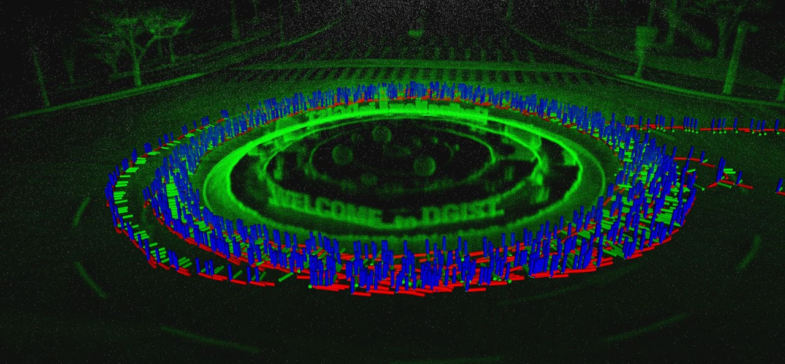

Welcome to APRL DGIST

AwardGiseop Kim has been selected for the Outstanding Young Researcher Award at ICROS 2026.
PublicationThree workshop papers from our lab have been accepted to ICRA 2026. Congrats to Doyeon and Nayak+Hyoseok for their papers accepted to the MM-SpatialAI Workshop, and to Hoyun for his paper accepted to the Workshop on Perceptual Challenges for Planetary Exploration.
FundingOur lab has been awarded the NRF Young Researcher Program (Type B) grant from the Ministry of Science and ICT, supporting research on multi-robot autonomy with implicit human-robot interaction (Project title: AIMS) for four years (2026-2029).
PeopleWelcome new members joining APRL: Doyeon Kim (PhD student), Beomsu Kim (MS student), and Hoyun Kim (MS student).
PublicationOne paper accepted to ICRA 2026. Congratulations to Hyoseok.
AwardGiseop has been selected as an early-career researcher for KRoC 2026. He will present his recent work on memory-augmented spatial intelligence for long-term autonomous robot navigation.
AwardJiseon received the Best Poster Award at the HEAI Workshop of IROS 2025.
FundingThe Robotics and Mechatronics Research Institute of DGIST has been selected for the Ministry of Education's Glocal Lab program. Our lab will conduct research on sensor fusion, robot perception, and cognitive AI for augmented human robots.